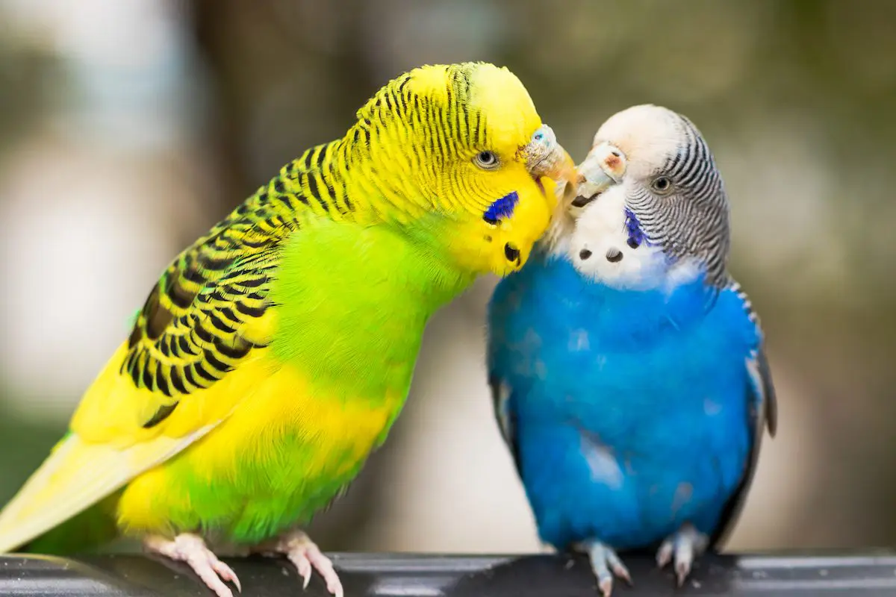

nice looking
nice looking

wow beautifull

wow so nice

just osam

lovely lovely

Zebras often trot when moving to new pastures, which is a fairly fast but easy gait for them to use over the long distances
they may have to travel. Their hard hooves are designed to withstand the impact of their body weight and to run easily over rocky ground. When resting at night, zebras lie down while one stands watch to prevent an ambush.

Throughout the month of December, Animal World and Snake Farm Zoo will be celebrating the majestic jaguar! In this blog, we will be sharing plenty of interesting
jaguar animal facts that are sure to deepen your appreciation of these amazing animals. You might even come away with a new favorite jaguar fact!

Right now, thousands of wild animals around the world are suffering in the name of tourism.
But it doesn’t have to be this way. You have the power to change the world for wild animals.